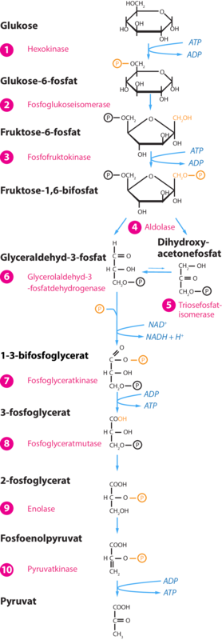

Hvad er Glykolyse?
Glykolysen foregår i mitokondriets cytoplasma, og består sådan set af 10 underliggende processer, herunder: Hexokinase, Fosfoglukoseisomerase, Fosfofruktokinase, Alsolase, Triosefosfatisomerase, glycerolaldehyd-3-fosfatdehydrogenase, Fosfoglyceratkinase, Fosfoglyceratmutase, Enolase og Pyrovatkinase. Alle disse mange små processer er med til at omdanne hvert glukosemolekyle fra vores føde, om til 2 pyruvat. Denne proces laver altså denne formel
C6H12O6 + 2 NAD+ + 2 ADP + 2Pi -> 2 CH3COCOO- (pyruvat) + 2H+ + 2 NADH + 2H+ + 2 ATP
ATP benyttes i cellens energikrævende processer, imens både pyruvat, NADH og H+ sendes videre til respirationens andre delprocesser
Billedet kommer fra systime